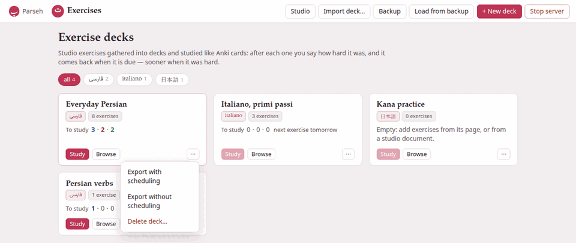

The decks page
The hub’s Exercises door opens the decks page: every deck you have, as a card, with what each one has for you to study now.

1. The bar along the top#
| Button | What it does |
|---|---|
| Studio | Opens the studio, where documents and their exercises are written. |
| Import deck… | Adds a deck somebody exported from Parseh — a .zip — as a new deck. See Export, import and backup. |
| Backup | Downloads every deck at once, as one zip, scheduling and all. |
| Load from backup | Puts such a backup back. |
| + New deck | Makes an empty deck (below). |
| Stop server | Stops Parseh. It asks first, and names anything the server is still working on, since stopping cuts it off. |
Parseh at the far left goes back to the hub, and Exercises beside it always brings you back here.
2. A deck’s card#
Each card says, from the top:
- The deck’s name
- — a link to the deck’s page.
- Its language
- , in that language’s own writing: فارسی, italiano, 日本語.
- How many exercises it holds
- :
8 exercises. - To study
- , then three numbers: the new exercises, the ones learning and the ones to review that you can study now, coloured as Anki colours its three queues — blue, red, green. A number that is zero is greyed.
When nothing is left to study, the card says when the next exercise is due:
| It says | Meaning |
|---|---|
next exercise in 45m | in 45 minutes — a learning step more than twenty minutes away (a nearer one already counts as to study), or the start of the next day, when it is less than an hour off |
next exercise in 3h | later today — a learning step hours long |
next exercise tomorrow | from the start of tomorrow |
next exercise in 5d | in five days (then 1.5mo, 2y as the waits grow) |
no exercises scheduled | nothing is waiting at all |
With the default options you will mostly see the last three: every learning step is then at most a quarter of an hour away, so it always counts as to study (below). The minutes and hours come from longer learning steps — 1 10 60, say, in the deck’s options — or, in minutes, from the next day starting within the hour.
An empty deck says so instead: Empty: add exercises from its page, or from a studio document.
What counts as “to study now” is what the study page would really show you now: the reviews and learning steps that are due, and the new exercises the day still has room for. A deck with 60 new exercises and the default limit of 20 a day says 20 new, not 60 — the other forty come on the next days. A learning step due in the next twenty minutes already counts, since the study page brings it forward when nothing else is left (see the scheduler).
Its buttons#
- Study starts studying that deck at once. It is dimmed when there is nothing to study, and pointing at it says how many exercises are waiting.
- Browse opens the deck’s page: the list of its exercises, the filters, the options.
- ⋯ opens a small menu:
- Export with scheduling
- and Export without scheduling download the deck as a zip — the first for your own other machine, the second for somebody else (more).
- Delete deck…
- asks first, then moves the deck to the
exercises/.trash/folder inside Parseh. Nothing is erased: moving its folder back brings the deck back, answers and all. A deck is months of answers, so it is never thrown away by one click.
3. Making a deck#
+ New deck asks for two things:
- Name
- — anything you like, up to 200 characters (extra spaces are dropped). Two decks may have the same name; each still has its own address.
- Language
- — one of the eleven, each written
Persian — فارسی,Italian — italiano, and so on. It starts on the language of the chip you picked, or on the first of the list when you picked all. Every exercise of a deck is in its language, as the dialog reminds you: this cannot be changed afterwards.
Create deck makes it and opens its page, where you can start filling it (Create deck with no name only says Give the deck a name). Most decks are made on the way, though: the studio’s + Deck and + Add all exercises dialogs end their list of decks with + New deck…, and the card sheet of a book or a video with + new deck… — see Filling a deck. (A deck page’s Copy to deck… and Move to deck… only list the decks you already have.)
4. The language chips#
The row of chips under the title is the same row every index page of Parseh has: all with the number of decks, then one chip for each language you have a deck in, with how many. A click on a chip shows only that language’s decks; all shows them all again.
The choice is the whole toolbox’s, not this page’s: pick Italian here and the hub, the libraries and the studio open on Italian too, and the other way round. A language you picked elsewhere that has no deck here has no chip here either, so the page opens on all instead of showing nothing — and the toolbox’s choice goes back to all with it.
5. When there are no decks#
A new Parseh has no decks, and the page says how one fills: press + Deck beside an exercise on a studio document to copy it into a deck, or open a deck and use Add exercise…, the same form the studio editor uses. A + New deck button waits under the explanation.
6. On a phone#
The Exercises pages are the same pages on a phone, laid out narrower: the cards stack in one column, and the buttons of the top bar are stacked in a column beside the Parseh and Exercises links, above the page’s title. In the hub’s Mobile mode the Exercises door is one of its four doors, with the same two counts, and every Exercises page has a mobile layout of its own: the decks with Study and Open, a deck with Study now, Cram all and its exercises to pick a cram of your own from — all, the ones a filter shows, by tag, one by one — and studying with no bar over the exercise, Next in the place Check was, and the ratings at the foot of the screen, or down its right edge held sideways — and nothing that makes, edits, tags, exports or imports. Browser and Mobile says more.
What “Stop server” asks
Stop the Parseh server? — and, when something is still running (a deck being imported, a backup being restored, a book being built elsewhere), how many tasks are running and the first five of them by name, with Stop server anyway. Every Parseh page stops answering until Parseh is started again.